5 1945
5.2 10-yr


5.3 5-yr
5.3.1 enviro
5.3.1.3 co-occurrence
5.3.1.3.1 1945
enviro keywords in enviro speeches 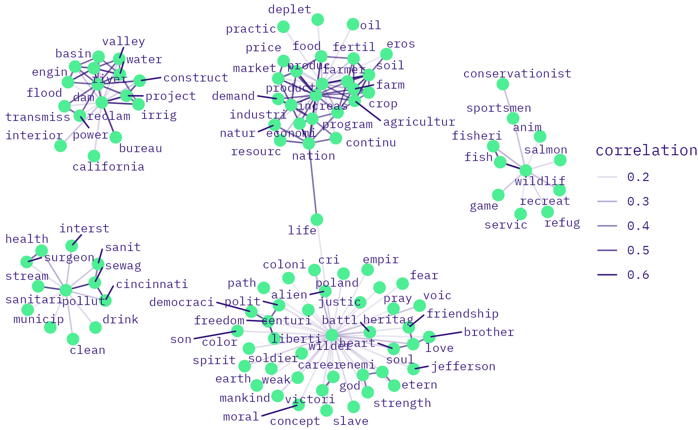
enviro keywords in labor speeches 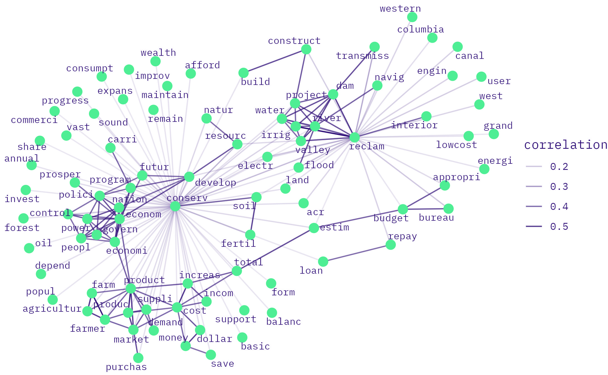
enviro keywords in enviro-labor speeches 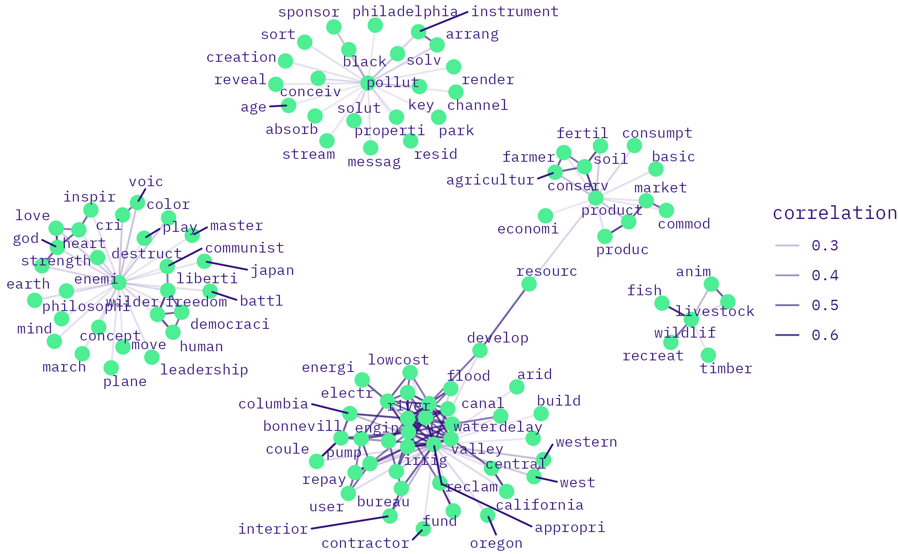
5.3.1.3.2 1950
<>enviro keywords in enviro speeches
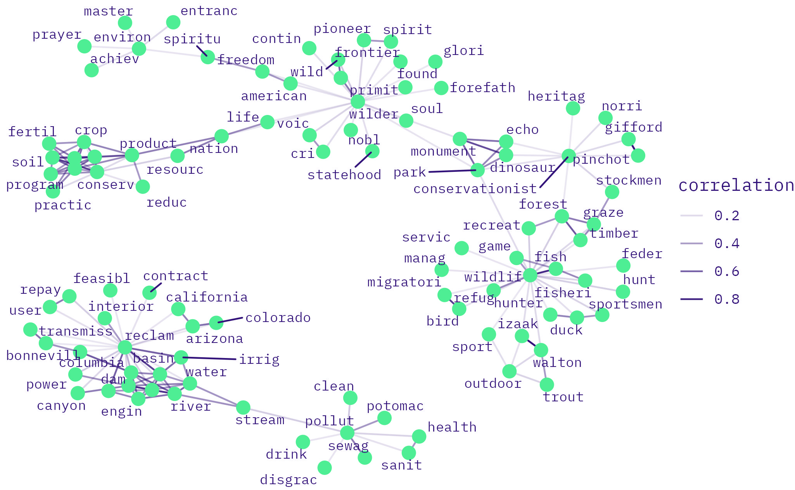
enviro keywords in labor speeches 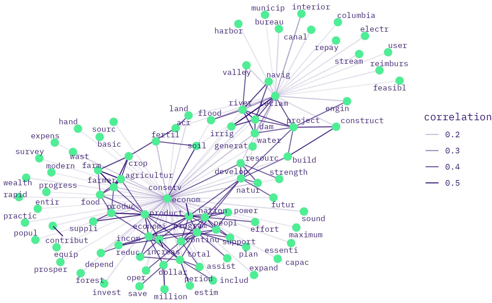
enviro keywords in enviro-labor speeches 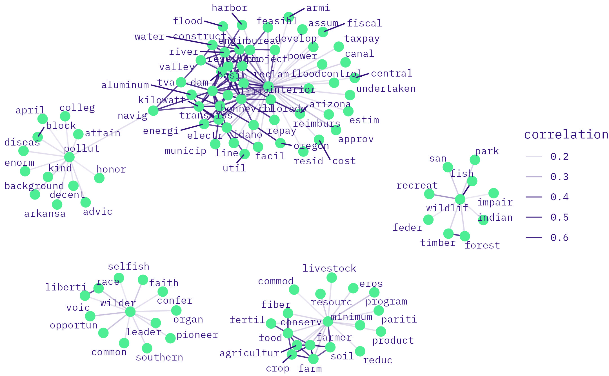

5.3.2 labor
5.3.2.3 co-occurrence
5.3.2.3.1 1945
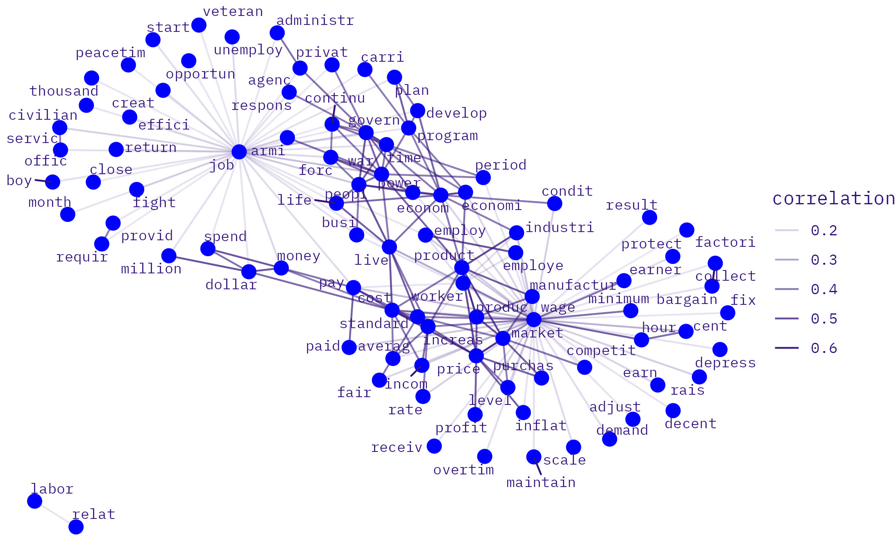
labor keywords in labor speeches
labor keywords in enviro-labor speeches 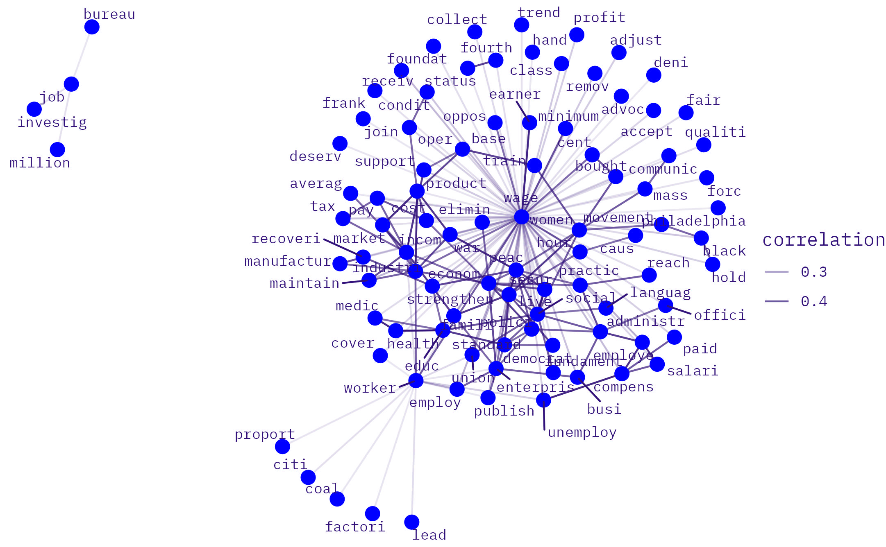
5.3.2.3.2 1950
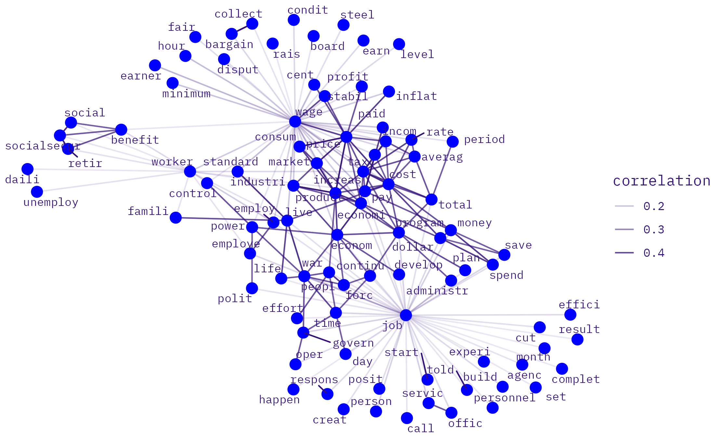
labor keywords in labor speeches
labor keywords in enviro-labor speeches 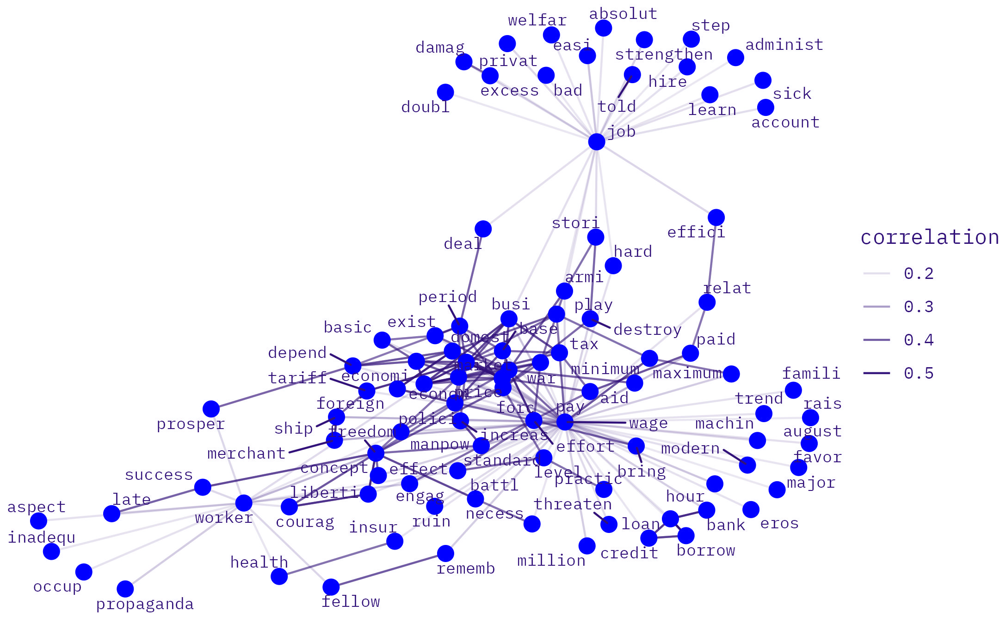
5.3.3 enviroLabor
5.3.3.3 co-occurrence
5.3.3.3.1 1945
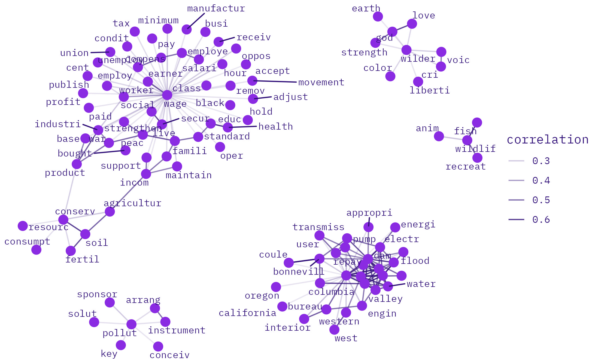
enviroLabor keywords in labor speeches 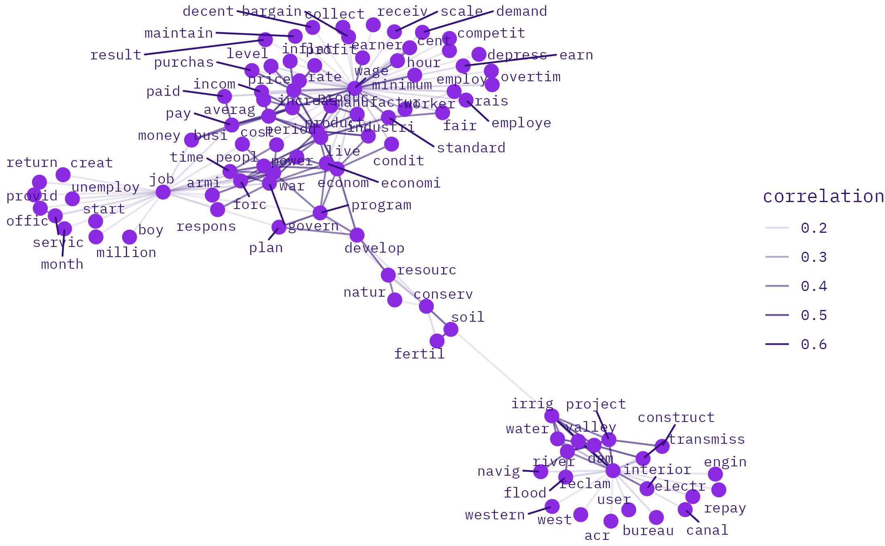
enviroLabor keywords in enviroLabor speeches
5.3.3.3.2 1950
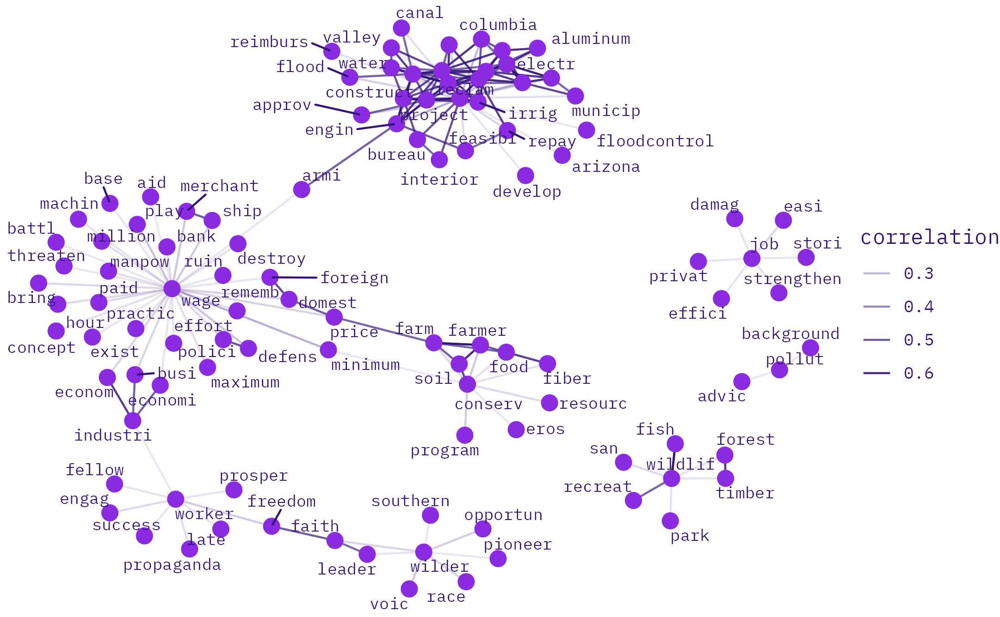
enviroLabor keywords in labor speeches 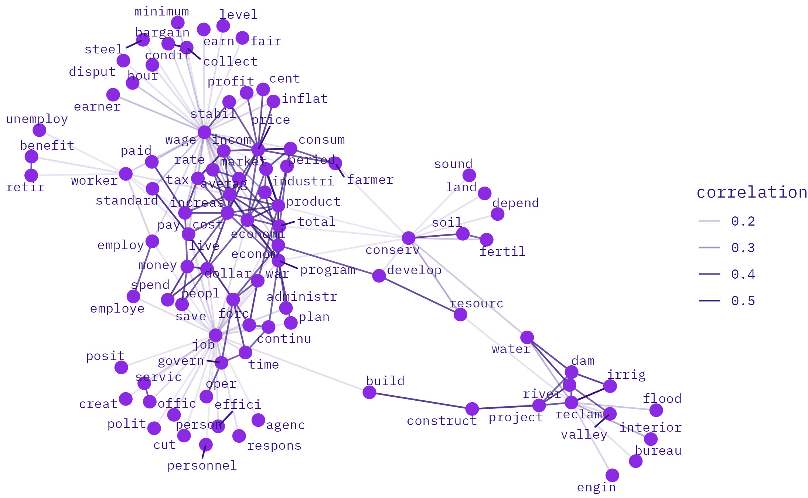
enviroLabor keywords in enviroLabor speeches